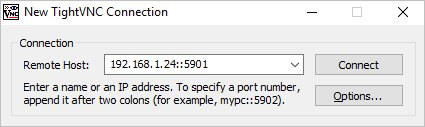

Обновлено: 20.09.2020 Опубликовано: 28.08.2017
Обновлено: 20.09.2020 Опубликовано: 28.08.2017 Настройка KVM на Ubuntu Server
Обновлено: 20.09.2020 Опубликовано: 28.08.2017
Тематические термины: KVM виртуализация, Linux, Ubuntu
Инструкция написана на примере Linux Ubuntu Server 18.04.3 LTS. Она подойдет для большинства дистрибутивов на основе Debian.
Проверка совместимости
Подготовка
Установка и запуск
Настройка сетевого моста
Создание ВМ
Подключение к ВМ
Управление из командной строки
Увеличение размера виртуального диска
Дополнительные средства управления
Virt Manager
Ubuntu-VM-Builder
Проверка поддержки гипервизора
Проверяем, что сервер поддерживает технологии виртуализации:
cat /proc/cpuinfo | egrep "(vmx|svm)"
В ответ должны получить что-то наподобие:
flags : fpu vme de pse tsc msr pae mce cx8 apic sep mtrr pge mca cmov pat pse36 clflush dts acpi mmx fxsr sse sse2 ss ht tm pbe syscall nx pdpe1gb rdtscp lm constant_tsc arch_perfmon pebs bts rep_good nopl xtopology nonstop_tsc aperfmperf pni pclmulqdq dtes64 monitor ds_cpl vmx smx est tm2 ssse3 cx16 xtpr pdcm pcid dca sse4_1 sse4_2 popcnt aes lahf_lm epb tpr_shadow vnmi flexpriority ept vpid dtherm ida arat
В противном случае, заходим в БИОС, находим опцию для включения технологии виртуализации (имеет разные названия, например, Intel Virtualization Technology или Virtualization) и включаем ее — задаем значение Enable.
Также проверить совместимость можно командой:
kvm-ok
* если команда вернет ошибку «kvm-ok command not found», установите соответствующий пакет: apt-get install cpu-checker.
Если видим:
INFO: /dev/kvm exists
KVM acceleration can be used
значит поддержка со стороны аппаратной части есть.
Для нашего удобства, создадим каталог, в котором будем хранить данные для KVM:
mkdir -p /kvm/{vhdd,iso}
* будет создано два каталога: /kvm/vhdd (для виртуальных жестких дисков) и /kvm/iso (для iso-образов).
Настроим время:
timedatectl set-timezone Europe/Moscow
* данная команда задает зону в соответствии с московским временем.
apt-get install chrony
systemctl enable chrony
* устанавливаем и запускаем утилиту для синхронизации времени.
Устанавливаем KVM и необходимые утилиты управления.
а) Ubuntu после версии 18.10
apt-get install qemu qemu-kvm libvirt-daemon-system virtinst libosinfo-bin
б) Ubuntu до 18.10:
apt-get install qemu-kvm libvirt-bin virtinst libosinfo-bin
* где qemu-kvm — гипервизор; libvirt-bin — библиотека управления гипервизором; virtinst — утилита управления виртуальными машинами; libosinfo-bin — утилита для просмотра списка вариантов операционных систем, которые могут быть в качестве гостевых.
Настроим автоматический запуск сервиса:
systemctl enable libvirtd
Виртуальные машины могут работать за NAT (в качестве которого выступает сервер KVM) или получать IP-адреса из локальной сети — для этого необходимо настроить сетевой мост. Мы настроим последний.
Используя удаленное подключение, внимательно проверяйте настройки. В случае ошибки соединение будет прервано.
Устанавливаем bridge-utils:
apt-get install bridge-utils
а) настройка сети в старых версиях Ubuntu (/etc/network/interfaces).
Открываем конфигурационный файл для настройки сетевых интерфейсов:
vi /etc/network/interfaces
И приведем его к виду:
#iface eth0 inet static
# address 192.168.1.24
# netmask 255.255.255.0
# gateway 192.168.1.1
# dns-nameservers 192.168.1.1 192.168.1.2
auto br0
iface br0 inet static
address 192.168.1.24
netmask 255.255.255.0
gateway 192.168.1.1
dns-nameservers 192.168.1.1 192.168.1.2
bridge_ports eth0
bridge_fd 9
bridge_hello 2
bridge_maxage 12
bridge_stp off
* где все, что закомментировано — старые настройки моей сети; br0 — название интерфейса создаваемого моста; eth0 — существующий сетевой интерфейс, через который будет работать мост.
Перезапускаем службу сети:
systemctl restart networking
б) настройка сети в новых версиях Ubuntu (netplan).
vi /etc/netplan/01-netcfg.yaml
* в зависимости от версии системы, конфигурационной файл yaml может иметь другое название.
Приводим его к виду:
network:
version: 2
renderer: networkd
ethernets:
eth0:
dhcp4: false
dhcp6: false
wakeonlan: true
bridges:
br0:
macaddress: 2c:6d:45:c3:55:a7
interfaces:
- eth0
addresses:
- 192.168.1.24/24
gateway4: 192.168.1.1
mtu: 1500
nameservers:
addresses:
- 192.168.1.2
- 192.168.1.3
parameters:
stp: true
forward-delay: 4
dhcp4: false
dhcp6: false
* в данном примере мы создаем виртуальный бридж-интерфейс br0; в качестве физического интерфейса используем eth0. 2c:6d:45:c3:55:a7 — физический адрес интерфейса, через который мы будем настраивать бридж; 192.168.1.24 — IP-адрес нашего сервера KVM; 192.168.1.1 — адрес шлюза; 192.168.1.2 и 192.168.1.3 — адреса серверов DNS.
Применяем сетевые настройки:
netplan apply
Настаиваем перенаправления сетевого трафика (чтобы виртуальные машины с сетевым интерфейсом NAT могли выходить в интернет):
vi /etc/sysctl.d/99-sysctl.conf
Добавляем строку:
net.ipv4.ip_forward=1
Применяем настройки:
sysctl -p /etc/sysctl.d/99-sysctl.conf
Для создания первой виртуальной машины вводим следующую команду:
virt-install -n VM1 \
--autostart \
--noautoconsole \
--network=bridge:br0 \
--ram 2048 --arch=x86_64 \
--vcpus=2 --cpu host --check-cpu \
--disk path=/kvm/vhdd/VM1-disk1.img,size=16 \
--cdrom /kvm/iso/ubuntu-18.04.3-server-amd64.iso \
--graphics vnc,listen=0.0.0.0,password=vnc_password \
--os-type linux --os-variant=ubuntu18.04 --boot cdrom,hd,menu=on
* где:
Подключение к виртуальной машине
На компьютер, с которого планируем работать с виртуальными машинами, скачиваем VNC-клиент, например, TightVNC и устанавливаем его.
На сервере вводим:
virsh vncdisplay VM1
команда покажет, на каком порту работает VNC для машины VM1. У меня было:
:1
* :1 значит, что нужно к 5900 прибавить 1 — 5900 + 1 = 5901.
Запускаем TightVNC Viewer, который мы установили и вводим данные для подключения:

Кликаем по Connect. На запрос пароля вводим тот, что указали при создании ВМ, (vnc_password). Мы подключимся к виртуальной машине удаленной консолью.
Если мы не помним пароль, открываем настройку виртуальной машины командой:
virsh edit VM1
И находим строку:
<graphics type='vnc' port='-1' autoport='yes' listen='0.0.0.0' passwd='12345678'>
<listen type='address' address='0.0.0.0'/>
</graphics>
* в данном примере для доступа к виртуальной машине используется пароль 12345678.
Управление виртуальной машиной из командной строки
Примеры команд, которые могут пригодиться при работе с виртуальными машинами.
1. Получить список созданных машин:
virsh list --all
2. Включить виртуальную машину:
virsh start VMname
* где VMname — имя созданной машины.
3. Выключить виртуальную машину:
virsh shutdown VMname
4. Включить автозапуск виртуальной машины:
virsh autostart VMname
5. Редактирование конфигурации виртуальной машины:
virsh edit VMname
6. Работа с сетевыми интерфейсами.
Добавить обычный сетевой интерфейс (default или NAT) виртуальной машине:
virsh attach-interface --domain VMname --type network --source default --model virtio --config --live
Добавить интерфейс типа bridge:
virsh attach-interface --domain VMname --type bridge --source br0 --model rtl8139 --config --live
Удалить сетевой интерфейс:
virsh detach-interface VMname --type bridge --mac 52:54:00:2e:a9:4d
* где bridge — тип сетевого интерфейса (также может быть network); 52:54:00:2e:a9:4d — MAC-адрес сетевого адаптера (узнать данный адрес можно в конфигурации виртуальной машины или в самой гостевой операционной системы).
7. Посмотреть IP-адреса, выданные виртуальным машинам автоматически:
virsh net-dhcp-leases default
* где default — виртуальная сеть, создаваемая по умолчанию при установке KVM.
Увеличение размера виртуального диска
Получаем список дисков для виртуальной машины:
virsh domblklist VMname
Пример ответа:
Target Source
------------------------------------------------
vda /data/kvm/vhdd/VMname-disk1.img
* в данном примере путь до диска — /data/kvm/vhdd/VMname-disk1.img.
Останавливаем виртуальную машину:
virsh shutdown VMname
* или завершаем работу в самой операционной системе.
Увеличиваем размер диска:
qemu-img resize /data/kvm/vhdd/VMname-disk1.img +100G
* данной командой мы расширим дисковое пространство виртуального диска /data/kvm/vhdd/VMname-disk1.img на 100 Гигабайт.
Мы должны увидеть:
Image resized.
Получаем информацию о виртуальном диске:
qemu-img info /data/kvm/vhdd/VMname-disk1.img
Запускаем виртуальную машину:
virsh start VMname
Меняем размер блочного устройства:
virsh blockresize UBU /data/kvm/vhdd/VMname-disk1.img 200G
* где 200G — общий размер виртуального диска после расширения.
После необходимо поменять размер диска в самой операционной системе. Пример того, как это можно сделать можно прочитать в инструкции Добавление дискового пространства виртуальной машине в VMware (раздел «Настройка операционной системы»).
Дополнительные средства управления
Virt-manager — графическая консоль для управления виртуальными машинами. С ее помощью можно создавать последние, модифицировать их, запускать, останавливать, подключаться консолью.
Установить на Linux Ubuntu:
apt-get install virt-manager
ubuntu-vm-builder — пакет, разработанный компанией Canonical для упрощения создания новых виртуальных машин.
Для его установки вводим:
apt-get install ubuntu-vm-builder
Читайте также